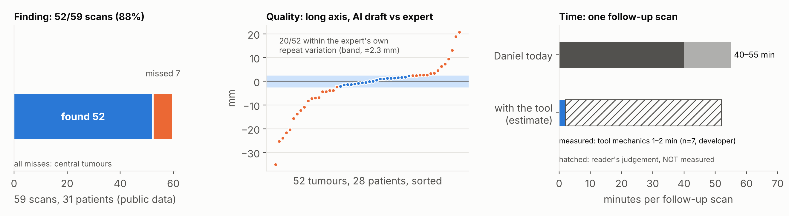
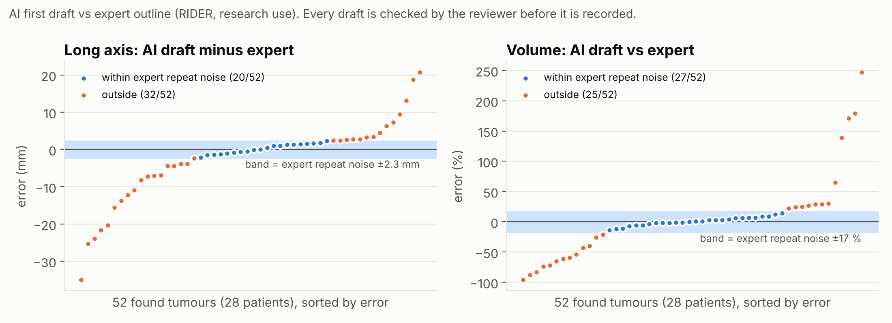
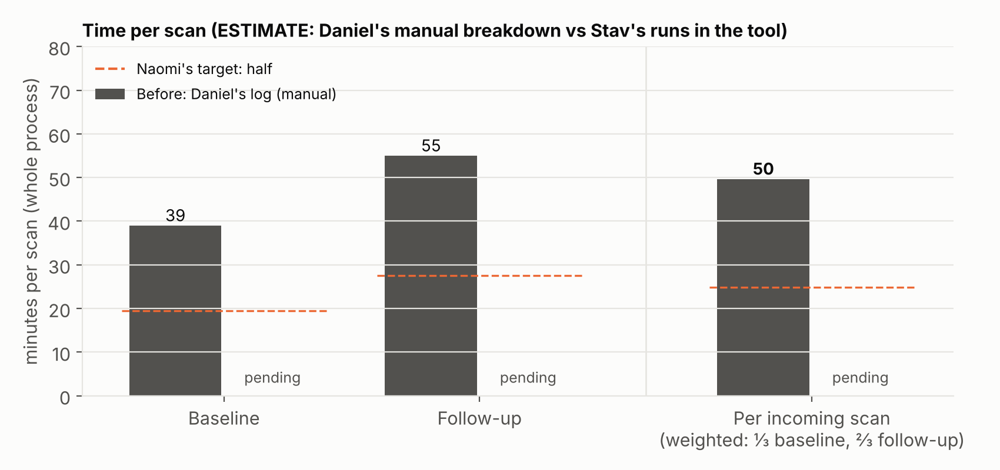

Research use only. Not for clinical use. No clinical claims.
AI-assisted finding, measuring and matching of lung nodules on CT, built for the Harbor Thoracic Oncology Lab (simulated). Tested on public data (RIDER Lung CT), not yet on the lab's own scans. Status 19 Oct 2026. Full version: RESULTS.md in the repository.
1 · What works
The AI finds most tumours, matches them across scans and drafts measurements close to the expert's on average; the review, edit trail and export to the lab's sheet work end to end.
Expert-marked tumour found in 52 of 59 scans (88%), with no hint; matched to the earlier scan in 24 of 24 pairs.
Long axis: median error 3.0 mm, no systematic bias (52 tumours, 28 patients). Every value is checked and confirmed by the reviewer before it is recorded.
The tool's own mechanics (opening, confirming, editing, matching, export) take about 1–2 minutes per scan (developer pilot, 7 scans).
2 · What fails
The AI misses central tumours and draws some outlines far off; the app makes the reviewer catch these, and the fix for central tumours needs more compute and more test scans.
All 7 misses (4 of 31 patients) are central tumours touching the hilum or mediastinum; the reviewer must check those areas before approving.
19 of 52 long axes are more than 5 mm off the expert. Not tested yet: faint ground-glass nodules, false alarms, the lab's own scans.
3 · How we measured the time saved
An estimate: the lab's users are simulated, so no real user could time themselves with the tool. We combined Daniel's step-by-step account of his manual review with the developer's timed runs, so the time saved is a range, not a number yet.
Today, by Daniel's own account, a follow-up scan takes 40–55 min by hand.
With the tool: 1–2 min of mechanics plus Daniel's checking of each AI draft, which we could not measure. So between a few minutes and close to today's time; whether the lab's target (about half) is met can't be shown yet.

Left: tumours found out of 59 scans. Middle: each dot is one tumour's long-axis error against the expert; the blue band is the expert's own variation between two scans of the same patient. Right: one follow-up scan today, and with the tool, where only the tool's mechanics are measured (blue) and the reader's judgement time is not (hatched). Public data; research use only.
1 · What works
Test set. RIDER Lung CT (public): 31 patients scanned twice, 15 minutes apart; 59 scans with an expert outline of one tumour each. The pipeline ran with no hint. Every measurement is taken the way Daniel takes it (long axis on the slice where the tumour is largest, short axis at right angles, volume from the outline), on the AI's outline and on the expert's.
What was compared
Sample
Result
Finding: expert tumour found, no hint
59 scans, 31 patients
52 / 59 (88%)
Long axis: AI draft vs expert
52 tumours, 28 patients
median error 3.0 mm (bias −0.3 mm); 20 / 52 within 2.3 mm
Volume: AI draft vs expert
52 tumours, 28 patients
median error 14% (bias +0.5%); 27 / 52 within 17%
Matching to the earlier scan
24 patient pairs
24 / 24 correct
Lobe
52 tumours
52 / 52 agree with the expert outline
Small nodules (< 8 mm), same nodule on both scans
84 pairs, 22 patients
diameter differs by a median 0.5 mm (volume ~30%: see What fails)
Yardstick: the expert's own variation between the two scans of the same patient (median 2.3 mm long axis, 17% volume; 28 patients). No systematic bias, but individual tumours vary more than that, which is why every outline is confirmed by the reviewer.

The workflow around the AI
Review and correction: accept or reject each AI mark, edit outlines (points, Erase, Draw), add missed nodules; volume is recorded only after the reviewer confirms the outline.
Edit trail and export: one-click Excel export in the lab's exact 18-column format, with an edit trail (AI draft, final value, who, when). Checked on real exports and by 30 automated checks.
Follow-ups: worklist grouped by patient, the earlier scan already linked, the AI's match shown as a suggestion side by side.
2 · What fails, and how I would fix it
Failure
How often
What the app does now
Central tumours missed (touching the hilum or mediastinum), even large ones, 14–52 mm
7 / 59 scans, 4 / 31 patients; all of the AI's misses
Approve stays blocked until the reviewer ticks "I checked the hilum and mediastinum" (one click to the mediastinal window; quick Add nodule). An automatic "check here" flag was tried and dropped: it caught 4 of the 7 but flagged 49 of the other 52 scans.
Outline far off: long axis more than 5 mm from the expert
19 / 52 tumours (14 patients): 13 too small, 6 too large
Nothing is recorded until the reviewer confirms the outline. The 4 small faint tumours drawn much too small show "AI unsure about the edges"; the 9 large ones are not flagged.
Small-nodule volume is approximate
~30% between repeat scans, nodules < 8 mm (84 pairs)
Diameters are the reliable number for small nodules; volume only after the reviewer confirms the outline.
Not tested
—
Faint ground-glass nodules (none in this data; Daniel's hardest cases); false alarms (only a proxy: 82% of AI marks reappear on the repeat scan); the lab's own scans.
How I would fix the central-tumour miss
Why it is hard: three of the four missed tumours lie inside the lung and grow along vessels, so no simple rule separates them from normal vessels near the hilum. The model itself gives them almost zero probability, so this needs a different model, not a setting.
A stronger computer with a GPU. Everything here ran on free tools (a free Colab GPU, no paid compute). A machine with a GPU, or paid cloud GPU hours, would let us run a second model trained on lung-cancer outlines (for example the public Medical Segmentation Decathlon lung-tumour task, which includes central tumours) and use it only where it disagrees with the nodule model.
A bigger test. The test has only 4 patients with central tumours, too few to judge any fix. Next: test on a larger set with central tumours (public sets first, then a sample of the lab's own scans in a hospital pilot) and count misses and false flags, as we did for the dropped flag.
A paid model, with care. Commercial nodule-detection software exists, but we have not evaluated any, and cost is exactly why the lab dropped last year's tool. Worth considering only if a test on central tumours shows it catches them and its yearly cost fits a research budget.
Until then the required manual central check stays.
Other fixes
Outlines and small nodules: test and tune on radiologist outlines of small and ground-glass nodules (public LNDb set: 27 ground-glass + 46 part-solid nodules ≥ 4 mm).
Follow-up view: export the lung alignment from the engine, so matching checks and the side-by-side view use it.
Limits of this test: public practice data (mostly large, solid tumours, 13–93 mm; the lab measures from 4 mm); we measured the AI's first draft, not the reviewer's confirmed values; outline settings were compared on the same 52 tumours, so the numbers are somewhat optimistic; the RIDER follow-up is a same-day repeat scan, so it tests matching, not growth.
3 · How we measured the time saved
The limitation
The lab's users (Naomi and Daniel) are simulated Slack personas. They answer questions, but they can't open the tool, use it on their scans or be timed. So a real usability test and a real before/after timing with the user were not possible, and everything below is an estimate.
What I would do with real users
Usability test with Daniel: give a scenario, not instructions ("a follow-up for patient X came in, record it as you would for the study"), watch without helping, ask him to think aloud, then debrief; rate problems by severity and effort.
Timed reviews: Daniel times his own work on a set of the lab's scans, with and without the tool, baseline and follow-up, using the same definition of time.
Quality of his final values: compare his confirmed values with his manual ones on the same scans.
What we did instead
Daniel's step-by-step account of his manual review, in his own words (table below).
The developer's timed runs through the whole flow in the live app (7 scans): the tool's overhead.
Feedback from a potential user: I asked a doctor friend to try the tool as a potential user (below).
The method was agreed with Base44's FDE lead (Sam, 18 Oct); everything is labelled as an estimate.
Step (follow-up scan)
Daniel today
What the tool does
Effect
Left with the tool
Loading
1–2 min
Opens with the AI's marks ready; prior scan already linked
Shortened
Overhead (measured)
Re-find and match each prior nodule
~10 min per nodule (aligns by bronchi and fissures)
Suggested match; prior and current side by side
Shortened
His check: not measured
Find new nodules
10–20 min (two passes, 250–400 slices)
AI marks candidates; one check pass + required central check
Search shortened; check kept
Not measured
Measure
2–4 min per nodule
Long and short axis drafted
Shortened
Not measured
Full outline
15–25 min per tumour, when needed
Drafted for every nodule; volume for every confirmed one
Shortened; more nodules
Not measured
Recording
3–5 min
One Excel export a day, in his sheet's format
Removed
Overhead
New: decide on each AI mark; central check
—
Accept or reject every suggestion; tick "hilum and mediastinum checked"
Added
Not measured
Total
40–55 min
Overhead 1–2 min + judgement (not measured)
Daniel's steps are in his own words (Slack, 18 Oct). Some are per nodule, so the total is his own figure, not our sum; his log (one follow-up, 55 min) agrees within 14%. A baseline scan takes about 39 min (log, 4 scans).

Developer pilot: 7 scans (4 patients, baseline and follow-up), 1 more excluded (left open while doing something else), 2–5 nodules each, active minutes from the app's timer, rounded to whole minutes. Every run is listed in the appendix.
How to read the range. Low end: the mechanics alone (~2 min), not a realistic reading time. High end: today's time minus recording (~35–52 min), as if checking each AI draft took as long as doing the step by hand; the new steps could push it higher. We report no single "with the tool" figure and no percentage saved, because these data can't support one. What the pilot does show is that the tool's mechanics are not where the time goes; how fast a trained reader can check the AI's drafts is the open question.
Feedback from a potential user
[TO FILL IN — doctor friend's review: her role/specialty, what she did with the tool (which scans, how long), and what she said: what was clear, where she hesitated, what she would change. Note that she is a friend, not a member of the lab.]
Next steps
Real timing and usability test: Daniel times his own reviews with and without the tool on a small set of the lab's scans, in a hospital pilot with the engine on one hospital server, plus a moderated usability session. This turns the timing range into a number.
Central tumours: a second model on a GPU and a bigger test set (page 3); manual central check until then.
Ground-glass test on the public LNDb set.
Cost for a research budget: write down the yearly cost before any rollout (Base44 plan, one hospital server, IT hours, and any paid GPU or model), so the lab can compare it with last year's tool.
Why this differs from last year's tool
Why it failed
What LungMarker does
Honest caveat
Accept / reject only
Edit the outline directly; volume only after Confirm; full edit trail.
Not yet tested by Daniel on his own scans.
No export to their sheet
One-click export in the exact 18-column format, plus the edit trail.
Checked on public scans.
Needed hospital IT to install
Runs in the browser; nothing installed on anyone's computer.
The AI engine still needs one hospital server, plus a data-governance review.
Too expensive
Open-source AI models, no licence or per-scan fees; low-cost app platform.
Yearly cost not yet written down (next step).
Appendix A · Every timed run (developer pilot, 18 Oct, final app version)
Patient (public RIDER)
Timepoint
Active min
Open min
Nodules reviewed
Note
RIDER-1225316081
Baseline
1
1
2
RIDER-1225316081
Follow-up 1
12
20
3
Excluded: scan left open while writing messages
RIDER-1332496276
Baseline
1
1
2
RIDER-1332496276
Follow-up 1
1
1
2
RIDER-1500037140
Baseline
2
2
4
RIDER-1500037140
Follow-up 1
2
2
4
RIDER-1532432635
Baseline
2
2
5
incl. 2 rejected
RIDER-1532432635
Follow-up 1
2
2
5
incl. 1 rejected + 1 not found
Included: 7 scans
1–2 (median 2)
2–5
developer, not a reader
Source: the app's own timer ("Minutes on scan" and the approval rows of the edit trail in the Excel export), active minutes: paused after 2 min without input or when the tab is hidden; whole minutes, so "1" means roughly 0.5–1.5 min.
Per follow-up scan: loading 1–2 min; re-finding and matching ~10 min per nodule (aligns by bronchi and fissures; slice numbers are unreliable because of breathing); finding new nodules 10–20 min (two passes over 250–400 slices); measuring 2–4 min per nodule; full outline 15–25 min per tumour when needed; recording 3–5 min; total 40–55 min. His log ("Minutes on scan", last 5 rows): baseline 38, 49, 30, 37; follow-up 55. About two-thirds of incoming scans are follow-ups (his estimate).
Appendix C · Technical method
Finding: TotalSegmentator lung_nodules (nnU-Net, ~1,350 training CTs partly from LIDC-IDRI, not RIDER; Apache-2.0) at full settings, on a free Colab T4 GPU (median 49 s per scan). Lobes: TotalSegmentator total.
Outline: the model's core plus a rim scaled to the core's size (shipped setting). Compared first with the model's own outline and MedSAM 2; four rim variants compared on the 52 tumours (halo_variants_found52.csv).
Measurements: long axis = longest diameter on the slice where it is largest; short axis = longest perpendicular on that slice; volume from the 3D outline; lobe = majority lobe.
Matching: affine lung registration (SimpleITK) + Hungarian pairing, gate max(10 mm, 0.75 × long axis).
Expert yardstick: median absolute difference between the expert's manual outlines on the two scans of each patient (28 patients).
"AI unsure about the edges": mean model probability over the outline < 0.6, or the rim would grow the long axis by ≥ 4 mm.
Appendix D · Raw data and reproduction
All in the engine repository, results/: finding_exam_all59.csv (one row per scan), finding_exam_matching.csv (per patient pair), halo_variants_found52.csv (outline settings; shipped = scaled_*), small_nodule_repeatability.csv, expert_baseline.csv, central_check_blob_all59.csv, faint_flag_candidates.csv, daniel_steps.csv, time_log.csv. python results/make_figures.py rebuilds every figure and prints every number in this report; python results/build_pdf.py rebuilds this PDF. Data: RIDER Lung CT (Zhao et al., 2015) and RIDER-LungCT-Seg (Wee et al., 2020), The Cancer Imaging Archive.